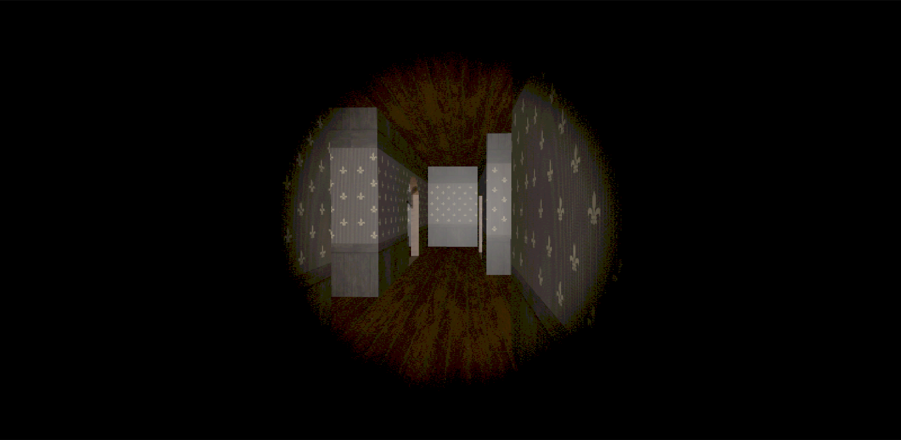

Інформаційне та програмне забезпечення системи комп’ютерної гри від першої особи з елементами психологічного горору
Information and software support for a first-person psychological horror game system.
Ілюстративні матеріали

Короткий опис
Проєкт присвячено створенню інформаційного та програмного забезпечення FPS‑гри з елементами психологічного горору, з фокусом на атмосферу, геймплейні механіки та взаємодію гравця зі світом.
Актуальність теми
Ігрова індустрія зростає завдяки розвитку платформ і підвищенню вимог аудиторії до якості візуалу, звуку та інтерактивності. Жанр психологічного горору залишається популярним, адже поєднує сильні емоційні враження, атмосферність і напружений геймплей, що добре працює як у стримінгу, так і у спільнотному обговоренні. Саме тому актуальним є дослідження підходів до створення FPS‑гри з акцентом на атмосферу та керовані ігрові механіки.
Мета дослідження
Створити інформаційне та програмне забезпечення системи комп’ютерної гри від першої особи з елементами психологічного горору, приділяючи увагу механікам, стилізації, UI та аудіосупроводу.
Основні завдання
- Розробити системи базових ігрових механік.
- Створити анімації та 3D-моделі для ігрового світу.
- Реалізувати ШІ ворогів для керованої поведінки в сценах.
- Налаштувати шейдери для стилізації та атмосферності.
- Спроєктувати UI та інтегрувати звукові ефекти.
Методологія дослідження
Розробка виконується в середовищі Unity з використанням Blender для 3D‑моделювання. Застосовано ітеративний підхід: прототипування механік, послідовне ускладнення рівня та регулярне тестування взаємодії гравця із середовищем і поведінки ШІ ворогів.
Очікувані результати
Створення рівня з гри з презентацією ключових механік майбутнього проєкту та демонстрацією атмосфери психологічного горору.
Контактна інформація
Макаренко Назарій
Email: makarenkonazar222@gmail.com